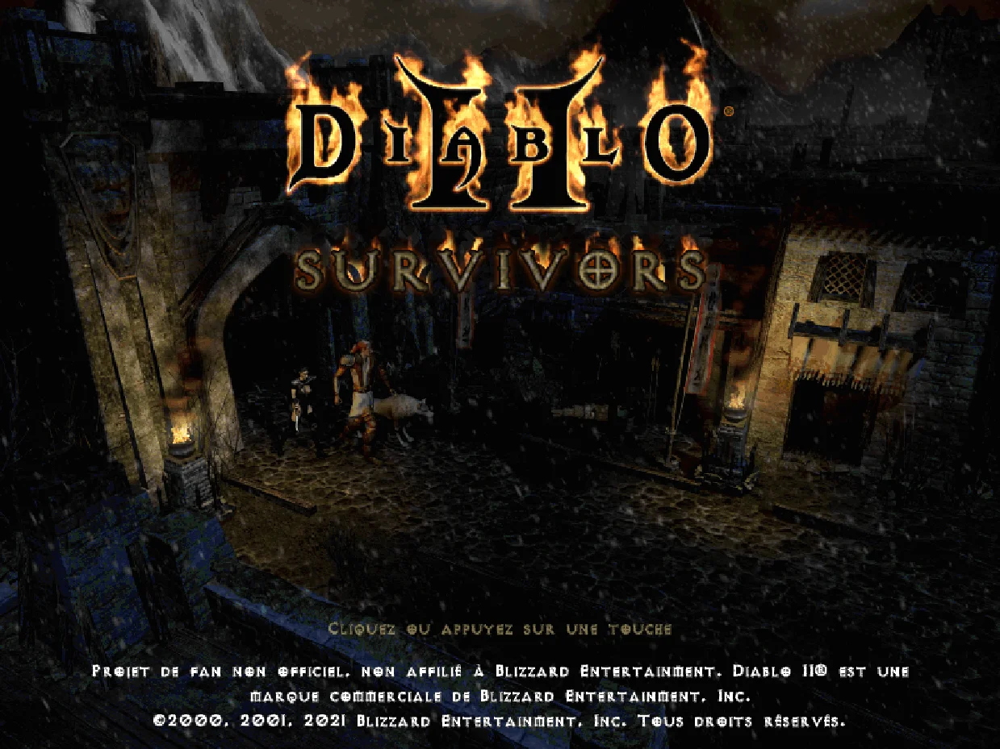
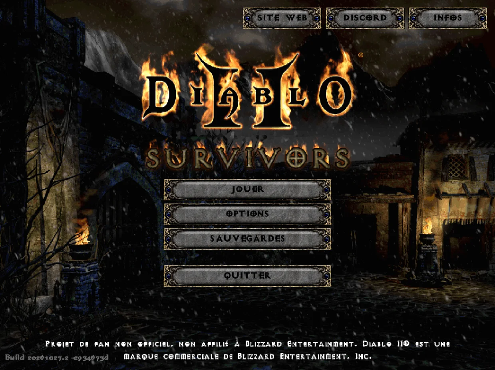
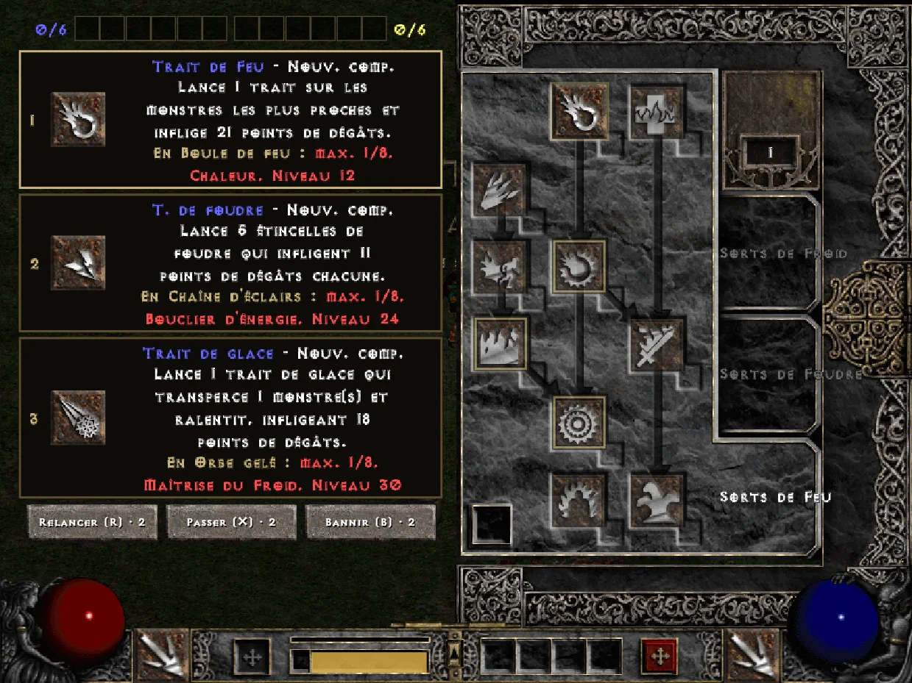
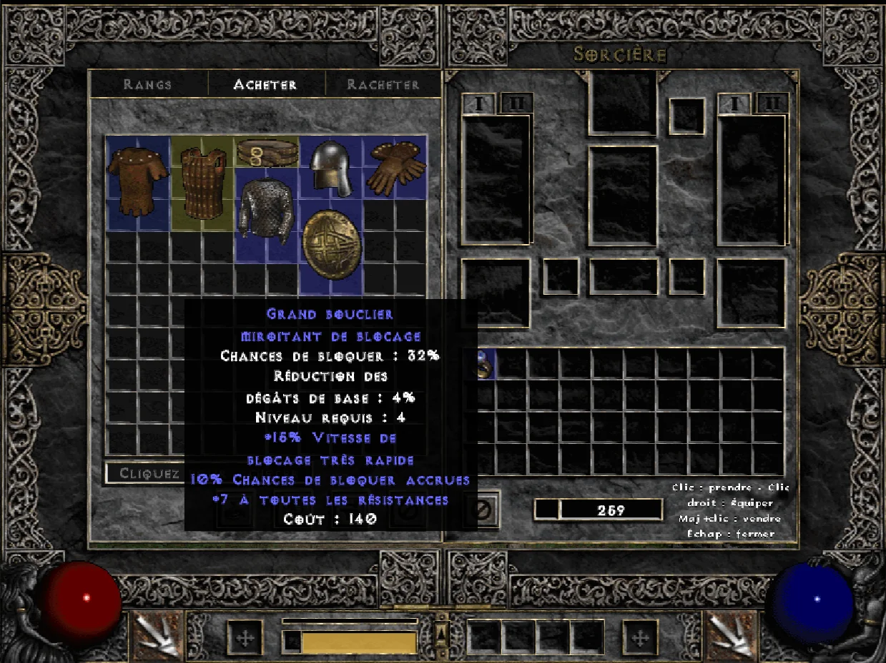
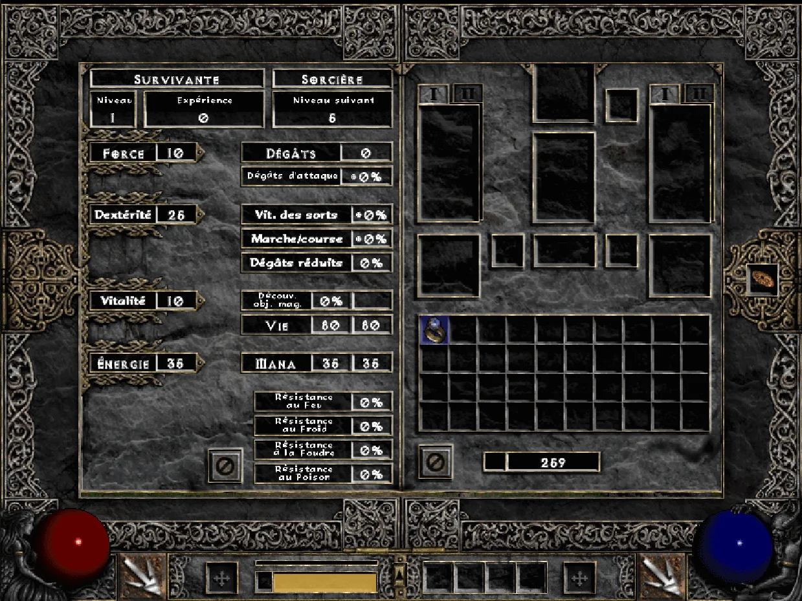
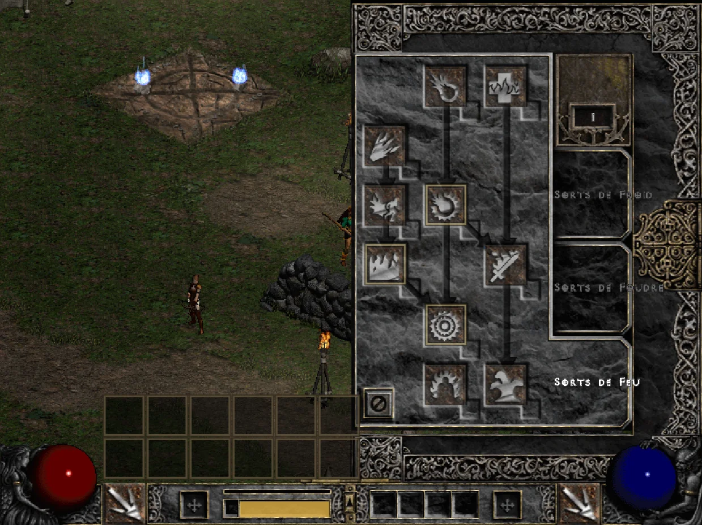
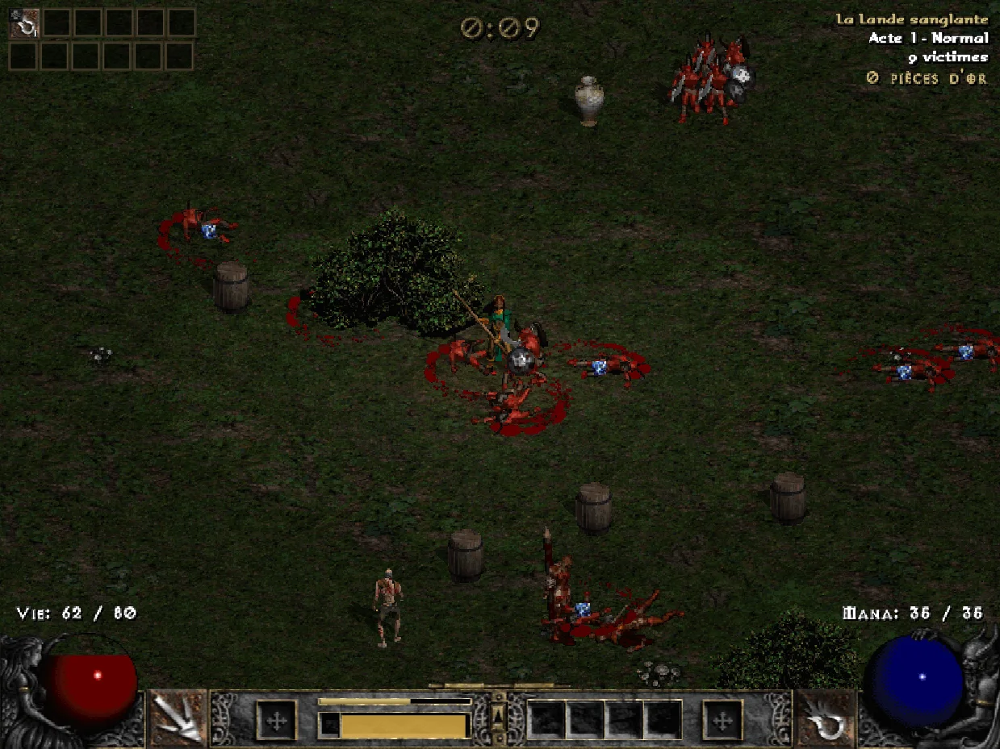
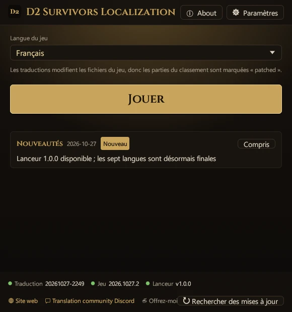
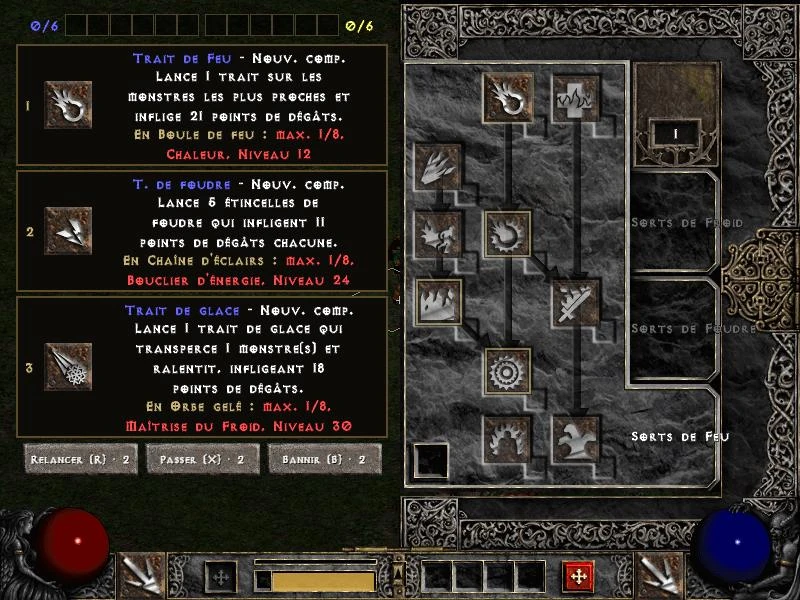
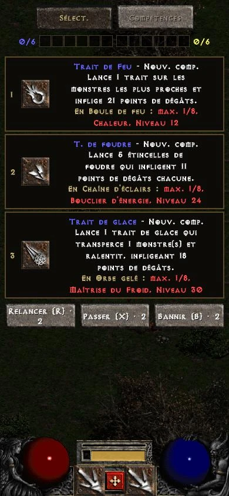

D2 Survivors
Créé par framara
Un jeu de fans gratuit et non officiel, de type survivors-like, dans l’univers de Diablo II. Ce projet de traduction n’est pas lié à son auteur ; signalez les problèmes du jeu lui-même sur les canaux officiels.
Traduction non officielle par des fans
Choisissez votre version
Jouez à Diablo II Survivors en français. Ce patch FR traduit le jeu lui-même, pas seulement un guide : interface, compétences, objets, monstres et cartes de niveau, avec les termes officiels de Diablo II: Resurrected. Le lanceur installe, met à jour et restaure tout en un clic.
Jouez à Diablo II Survivors dans votre langue. Ce patch traduit le jeu lui-même, pas un guide : dans le navigateur, un clic sur un favori passe le jeu en chinois (traditionnel), chinois (simplifié), japonais, allemand, français, russe ou polonais, avec les termes officiels de Diablo II: Resurrected. Rien à installer, sur PC comme sur mobile.











Images du jeu : D2 Survivors (framara), avec les fichiers Diablo II du joueur
Ce projet ne fournit que des traductions et ne contient aucun fichier du jeu. Avant de commencer, procurez-vous D2 Survivors et Diablo II auprès des sources officielles ci-dessous.
Créé par framara
Un jeu de fans gratuit et non officiel, de type survivors-like, dans l’univers de Diablo II. Ce projet de traduction n’est pas lié à son auteur ; signalez les problèmes du jeu lui-même sur les canaux officiels.
Blizzard Entertainment
D2 Survivors lit les graphismes et les sons du Diablo II installé sur votre ordinateur : il vous faut donc votre propre Diablo II: Resurrected, ou Diablo II + Lord of Destruction (patch 1.14).
Terminologie : les noms des compétences, objets, monstres et zones suivent la traduction officielle de Diablo II: Resurrected ; le reste est traduit par ce projet.
Disponibles en version finale : chinois (traditionnel), chinois (simplifié), japonais, allemand, français, russe et polonais.
Mises à jour des traductions, des langues et du lanceur. Le lanceur et le favori récupèrent la dernière traduction à chaque fois, sans nouveau téléchargement.
Vous ne modifiez aucun fichier du jeu à la main : le lanceur s’occupe de tout. Fermez d’abord le jeu. Le lanceur s’affiche dans la langue que vous choisissez.
Téléchargez la version bureau sur le site officiel de D2 Survivors, indiquez votre dossier Diablo II dans l’écran de configuration et vérifiez que le jeu se lance.
Téléchargez d2s-launcher.exe et placez-le dans n’importe quel dossier. Aucune installation.
Au premier lancement, toutes les langues s’affichent, chacune écrite dans sa propre langue. Cliquez sur la vôtre puis sur « → » : le lanceur et la traduction du jeu utiliseront cette langue.
① « Jeu » : le lanceur trouve D2 Survivors (par défaut dans %LOCALAPPDATA%\Programs\D2 Survivors ; sinon, « Choisir un dossier… »). ② « Diablo II » : il cherche votre Diablo II: Resurrected ou Diablo II classique ; s’il ne le trouve pas, vous pouvez « Passer ». ③ « Terminé » : cliquez si vous le souhaitez sur « Créer un raccourci sur le bureau », puis sur « Jouer ». La première fois, la traduction est téléchargée et l’app.asar d’origine est sauvegardé.
Par défaut, chaque lancement récupère la dernière traduction (« Mettre à jour les traductions au démarrage », dans « Paramètres »), et elle se réapplique après les mises à jour du jeu. Pour changer de langue, utilisez « Langue du jeu » sur l’écran principal.
app.asar d’origine.%LOCALAPPDATA%\D2SurvivorsLauncher.Pour créer votre propre raccourci, utilisez cette ligne comme cible : le jeu se lance dans la langue choisie, sans ouvrir la fenêtre du lanceur. (Le raccourci créé par « Créer un raccourci sur le bureau » ouvre la fenêtre et lance le jeu aussitôt.)
d2s-launcher.exe --launch --lang fr--launch--play--lang <id>--no-update--update--restore--self-update--statusVous jouez dans le navigateur sur d2survivors.lol ? Un favori passe le jeu en chinois (traditionnel), chinois (simplifié), japonais, allemand, français, russe ou polonais, avec la même traduction que le lanceur. Rien à installer, sur PC comme sur mobile.
D2 Français ← glisser dans la barre de favoris
javascript:import('https://cycleapple.github.io/d2survivors-localization/web/d2zh.js').then(m=>m.default()).catch(e=>alert('D2 Survivors Localization: '+e))Non. C’est une traduction non officielle faite par des fans, sans lien avec les développeurs de D2 Survivors ni avec Blizzard Entertainment.
Le code, oui. Les sources du lanceur, du favori, de ce site et des outils sont sur GitHub sous licence MIT. Le lanceur est compilé automatiquement à partir de ces sources publiques par GitHub Actions (historique des compilations), et chaque version inclut d2s-launcher.exe.sha256 pour que vous puissiez le vérifier vous-même.
Les données de traduction (les dictionnaires) ne sont pas encore sous licence libre : tous droits réservés, voir dict/LICENSE. Les termes officiels qu’ils reprennent appartiennent à Blizzard Entertainment.
Elle est terminée : entièrement traduite et vérifiée en jeu pour qu’il ne manque rien. Toute l’interface et 300 entrées tirées au hasard ont ensuite été relues de façon indépendante, ce qui a donné environ 360 corrections dans tout le dictionnaire. Les noms d’objets magiques et de monstres uniques respectent l’ordre des mots et le genre en français, par exemple « Coiffe solide de l’esprit », et les héroïnes portent des titres au féminin. Environ 70 % des termes viennent directement de la traduction officielle de Diablo II: Resurrected.
Si vous repérez une erreur, dites-le-nous.
Oui. Le lanceur n’existe que pour Windows pour l’instant ; sur Mac, Linux et mobile, jouez à la version navigateur et utilisez le favori de l’onglet « Navigateur ».
Non. Le lanceur remplace seulement resources\app.asar dans le dossier du jeu, après avoir sauvegardé l’original. Les sauvegardes sont ailleurs et ne sont ni lues ni modifiées.
Non. Les sauvegardes restent dans votre navigateur. Le favori remplace seulement le texte du jeu dans la page ouverte et ne laisse rien derrière lui ; recharger ramène l’original.
Une mise à jour remplace app.asar : la traduction disparaît jusqu’à ce que vous relanciez le jeu depuis le lanceur ou son raccourci, qui la réapplique.
Si la nouvelle version a trop changé, le lanceur ne force rien : il lance le jeu original et indique que la traduction est en cours de correction. Une fois corrigée, elle se réapplique automatiquement au lancement suivant ; vous n’avez rien à faire.
Le favori vérifie à chaque fois que ses règles correspondent à la nouvelle version. Sinon, il indique que la traduction doit être mise à jour et ne démarre pas, sans toucher au jeu d’origine. Jouez en anglais en attendant.
La traduction utilise l’emplacement de la langue coréenne intégré au jeu ; le menu affiche donc le nom de la langue choisie à sa place. Pour jouer en coréen, choisissez « 한국어 (원본) » dans le lanceur.
Android Chrome n’exécute pas les favoris touchés depuis la liste des favoris : tapez le nom « D2 Français » dans la barre d’adresse et touchez le favori qui apparaît en dessous. Sur iPhone, ouvrez les favoris de Safari depuis la page du jeu et touchez-le.
Vérifiez aussi que toute l’adresse du favori a été remplacée par le code, qui commence par javascript:.
Tous les textes du jeu sont traduits et ont été vérifiés en jeu pour qu’il n’en manque aucun. Si vous voyez de l’anglais, c’est généralement qu’une mise à jour du jeu a ajouté de nouveaux textes ; une prochaine mise à jour de la traduction les ajoutera, et le lanceur la télécharge automatiquement. Si cela reste en anglais, dites-le-nous.
Tous les textes du jeu sont traduits et ont été vérifiés en jeu pour qu’il n’en manque aucun. Si vous voyez de l’anglais, c’est généralement qu’une mise à jour du jeu a ajouté de nouveaux textes ; une prochaine mise à jour de la traduction les ajoutera, et le favori charge toujours la dernière traduction. Si cela reste en anglais, dites-le-nous.
Le lanceur n’est pas signé (un certificat coûte chaque année), donc Windows SmartScreen avertit tant qu’assez de personnes ne l’ont pas téléchargé.
Il n’est pas signé, mais le code source et le processus de compilation du lanceur sont publics.
Cliquez sur « Informations complémentaires », puis sur « Exécuter quand même » ; Windows ne redemandera plus. Ne le téléchargez que depuis ce site ou GitHub Releases. Chaque version inclut d2s-launcher.exe.sha256, à vérifier avec certutil -hashfile d2s-launcher.exe SHA256.
Si votre navigateur indique que le fichier est rarement téléchargé, choisissez « Conserver » dans le menu du téléchargement.
Non. Le jeu n’accepte que les lettres anglaises (sans é, è, ç…) et le coréen dans les noms de personnage.
Fautes, textes non traduits et problèmes de favori ou de lanceur : sur le Discord de la communauté de traduction, où sont aussi publiées les nouvelles.
Vous pouvez aussi signaler les erreurs de traduction et les bugs du programme sur GitHub Issues.
Les problèmes du jeu lui-même (sans rapport avec la traduction) : sur le Discord officiel de D2 Survivors (anglais).
Avec plaisir ! Toutes les langues sont disponibles en version finale, mais une traduction peut toujours s’améliorer. Si vous repérez une formulation maladroite ou une faute, surtout dans votre langue maternelle, dites-le-nous. Contactez-nous ici.